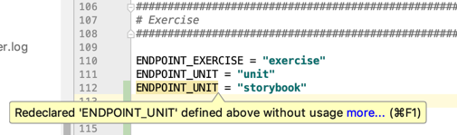
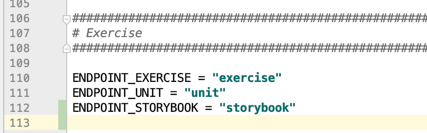
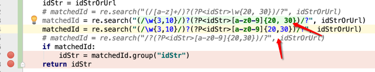
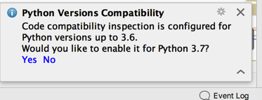
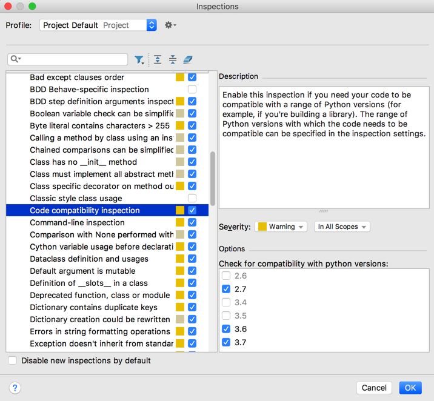
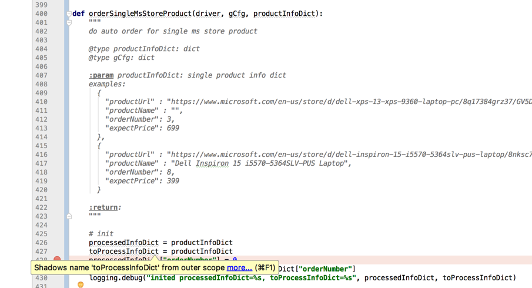

编辑期间
PyCharm的智能之处，在静态的代码文件编辑期间，也有很多的体现。
下面举例说明：
变量名重复
变量错误提示之命名重复
此处拷贝上面一行后，修改了后面的值后，但是忘了及时修改前面的变量名了，然后变量名变黄色警告提示出错了：
Redeclared xxx defined above without usage

-》然后及时改为正常的变量名，即可：

-》很是贴心，防止笔误导致变量出错。
正则表达式语法错误则显示普通字符串颜色
折腾【已解决】Python的正则re的search查找不到值期间
- 都能检测出Python的
re的{m,n}的格式，从而显示出正确的蓝色数字- 而不小心写错成中间有多余空格：
{m, n}，都会显示出字符串的绿色
- 而不小心写错成中间有多余空格：

真的很智能->从颜色显示上就帮你容易识别出错误的正则的语法。
Python版本兼容性提示
之前遇到提示：

点击Yes

变量提示：Shadows name from outer scope
之前遇到代码
def xxx():
for (curIdx, eachProductDict) in enumerate(curLoopProductList):
logging.info("[%s] eachProductDict=%s", curIdx, eachProductDict)
(processedInfoDict, toProcessInfoDict) = orderSingleMsStoreProduct(driver, gCfg, eachProductDict)
processedOrderTime = processedInfoDict["orderNumber"]
...
出现提示：
Shadows name from outer scope
This inspection detects shadowing names defined in outer scopes

具体含义是：
函数内部的变量，如果和函数被调用的外部的变量一样的话，就被PyCharm中叫做shadows name
这样的话，容易引发不容易觉察到的，由于函数内部和外部的变量名一致而引发的一些问题：
比如：内部函数名引用时不小心写错了时，就会导致其实调用了外部变量名，从而导致逻辑错乱。
所以解决办法是：
确保函数内部和外部的变量名不要重复，这样就不会导致可能由此导致的错误了。
后来代码做了改动：
在外部也有的一个全局变量processedInfoDict的情况下，把函数内部的processedInfoDict变量改名，比如改为hasProcessedInfoDict：
processedInfoDict = {"xxx": "yyy"}
def xxx():
for (curIdx, eachProductDict) in enumerate(curLoopProductList):
logging.info("[%s] eachProductDict=%s", curIdx, eachProductDict)
(hasProcessedInfoDict, needToProcessInfoDict) = orderSingleMsStoreProduct(driver, gCfg, eachProductDict)
processedOrderTime = hasProcessedInfoDict["orderNumber"]
...
就可以了消除警告了。